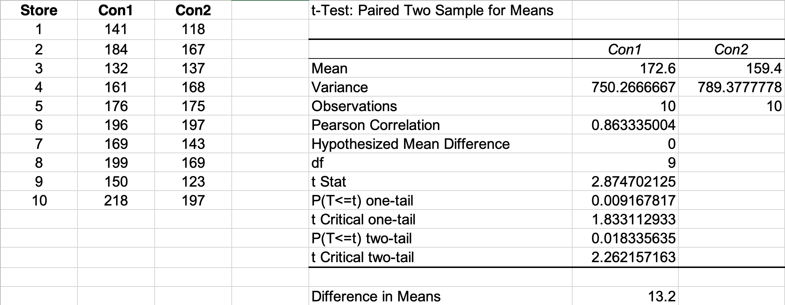
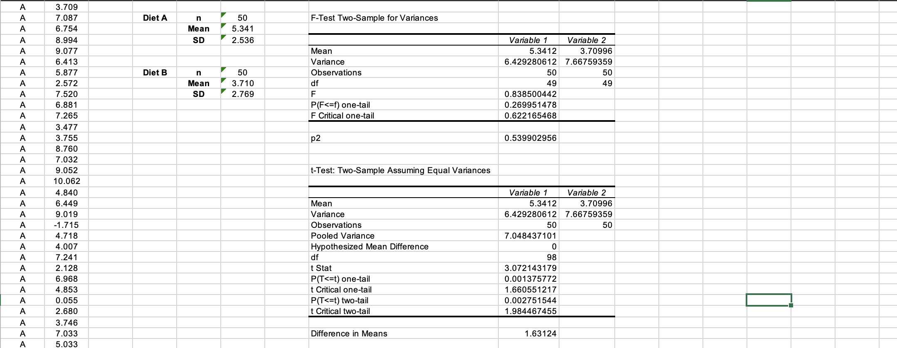

Unit 7: Artefacts
e-Portfolio Activity: Hypothesis Testing Worksheet
In this unit, we were asked to complete the hypothesis testing worksheets using Excel. This served as a great tutorial for hypothesis testing using excel.
 Collaborative Learning Discussion 2
Case Study: Accuracy of Information
As part of this unit's activities, we were asked to analyse the following case study, answer some questions, and share our perspectives:
Abi is a researcher at an institute and also a statistical programmer. Abi has received a project from a manufacturer to review the nutritional value of a new cereal, Whizzz. Having collected the necessary data, he now needs to perform the appropriate analyses and print the reports for him to send to the manufacturer. Unfortunately, the data Abi has collected seems to refute the claim that Whizzz is nutritious, and, in fact, they may indicate that Whizzz is harmful.
Abi also realises that some other correlations could be performed that would cast Whizzz in a more favourable light. “After all,” he thinks, “I can use statistics to support either side of any issue.”
Ethical Concerns
- Clearly, if Abi changed data values in this study he would be acting unethically. But is it any more ethical for him to suggest analysing correct data in a way that supports two or more different conclusions?
- Is Abi obligated to present both the positive and the negative analyses?
- Is Abi responsible for the use to which others put his program results?
- If Abi does put forward both sets of results to the manufacturer, he suspects that they will publicise only the positive ones. What other courses of action has he?